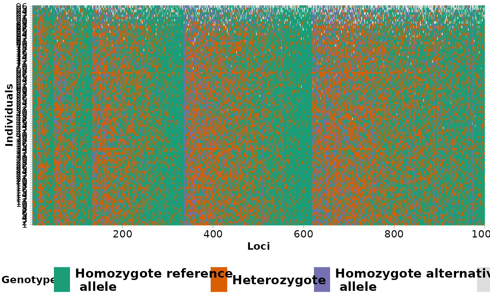

Often it is desirable to have the genlight object sorted individuals by population names, indiviual name, for example to have a more informative gl.smearplot (showing banding patterns for populations). Also sorting by loci can be informative in some instances. This function provides the ability to sort individuals of a genlight object by providing the order of individuals or populations and also by loci metric providing the order of locis. See examples below for specifics.
Arguments
- x
genlight object containing SNP/silicodart genotypes
- sort.by
either "ind", "pop". Default is pop
- order.by
that is used to order individuals or loci. Depening on the order.by parameter, this needs to be a vector of length of nPop(genlight) for populations or nInd(genlight) for individuals. If not specified alphabetical order of populations or individuals is used. For sort.by="ind" order.by can be also a vector specifying the order for each individual (for example another ind.metrics)
- verbose
set verbosity
Value
Returns a reordered genlight object. Sorts also the ind/loc.metrics and coordinates accordingly
Details
This is convenience function to facilitate sorting of individuals within the genlight object. For example if you want to visualise the "band" of population in a gl.smearplot then the order of individuals is important. Also
See also
Other base dartR:
gl.sample()
Author
Bernd Gruber (Post to https://groups.google.com/d/forum/dartr)
Examples
#sort by populations
bc <- gl.sort(bandicoot.gl)
#> Starting gl.sort
#> Processing genlight object with SNP data
#>
#sort from West to East
bc2 <- gl.sort(bandicoot.gl, sort.by="pop" ,
order.by=c("WA", "SA", "VIC", "NSW", "QLD"))
#> Starting gl.sort
#> Processing genlight object with SNP data
#>
#sort by missing values
miss <- rowSums(is.na(as.matrix(bandicoot.gl)))
bc3 <- gl.sort(bandicoot.gl, sort.by="ind", order.by=miss)
#> Starting gl.sort
#> Processing genlight object with SNP data
#>
gl.smearplot(bc3)
#> Processing genlight object with SNP data
#> Starting gl.smearplot
#>

#> Completed: gl.smearplot
#>